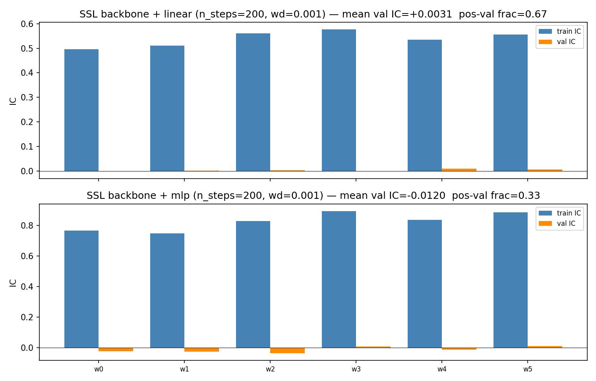

Factor SSL walkforward (supervised-cnn backbone) — polar Morlet bundle does not clear the indicator baseline¶
Decoder note (2026-05-09): the backbone evaluated here was
trained with apps/replay --decoder cnn
(supervised reconstruction of RSI / MACD / vol / CCI), not the
strict-SSL --decoder masked-ae path. The
production filename *-rsi+macd+vol+cci-cnn-*.npz reflects this.
Earlier wording on this page used "SSL backbone" loosely; references
have been tightened to "supervised-cnn backbone" or
"indicator-reconstruction backbone" where the decoder choice is
load-bearing. The strict-SSL masked-ae path is wired but no
production npz exists for it, and the head-to-head against this
result hasn't been run — see the open question at the bottom of
this page.
Operational rule: the polar-Morlet-pretrained
supervised-cnn replay backbone +
freshly-initialized rank-IC head does not beat the
deterministic-indicator baseline
of mean val IC = +0.012 on the 297-ticker stooq_us_long /
20-day-horizon protocol. Confirmed by direct rerun on the new
polar Morlet bundle (commit 3451900) — same conclusion the
prior 2-channel-bundle run reached, so the bundle migration didn't
change the headline factor verdict.
Setup¶
- Backbone:
Output/cwtonly-AAPL+294tickers-h631e9d47-rsi+macd+vol+cci-cnn-nogit.npz, frozen. K=96 (window cols), F=105 (= 7 channels per scale × 15 scales = polar Morlet bundle), hidden=64, n_layers=2, hidden_flat=5632. Trained byapps/replay --decoder cnnon a 295-ticker stooq_us_long subset with 4 reconstruction targets (rsi, macd, vol, cci). - Universe: 297 stooq_us_long tickers post-
min_history_bars=6500filter, date range2000-01-03 → 2026-04-01. - Walk-forward: 6 rolling windows over 311 rebal-blocks, train=63 /
val=39 / step=39 blocks at
rebal_days=20. Fresh AdamW (head only, frozen backbone) per window. - Heads:
linear(5632 → 1) andmlp(5632 → hidden=64 → 1, 1 hidden layer), both 200 AdamW steps atlr=1e-2,weight_decay=1e-3. Backbone fine-tune disabled (Stage 1 only). - Modal
cpu=4, gpu=T4, memory=192GBafter three OOM-bumps (cac94e1→ed4043f→ memory + copy-elim in3451900).
Walk-forward result (2026-05-09)¶

Per-window IC summary:
| Window | linear train_ic | linear val_ic | mlp train_ic | mlp val_ic |
|---|---|---|---|---|
| 0 | +0.497 | -0.000 | +0.765 | -0.022 |
| 1 | +0.511 | +0.001 | +0.747 | -0.025 |
| 2 | +0.561 | +0.003 | +0.827 | -0.035 |
| 3 | +0.577 | -0.002 | +0.894 | +0.010 |
| 4 | +0.534 | +0.010 | +0.835 | -0.012 |
| 5 | +0.555 | +0.006 | +0.884 | +0.012 |
Aggregates:
| Head | n_steps | wd | mean val IC | median val IC | pos-val frac | mean val Sharpe |
|---|---|---|---|---|---|---|
| linear | 200 | 1e-3 | +0.0031 | +0.0020 | 0.67 (4/6) | +0.41 |
| mlp | 200 | 1e-3 | -0.0120 | -0.0171 | 0.33 (2/6) | (negative) |
| indicator baseline — linear | 200 | 1e-3 | +0.0120 | +0.0168 | 0.83 (5/6) | ~+0.44 |
| indicator baseline — mlp | 200 | 1e-3 | +0.0081 | +0.0075 | 0.67 (4/6) | — |
Read¶
The supervised-cnn-backbone linear head lands at ~1/4 of the
indicator linear head's val IC. The MLP head goes negative on
average — worse than random — even though its train IC averages
+0.83 (so the head is learning something, just nothing that
generalizes).
This is the same conclusion the prior factor run reached on the
legacy 2-channel bundle. The bundle migration to polar Morlet
(ss_features.causal_polar_morlet_matrix, 7 channels per scale)
did not move the needle on this benchmark.
A note on why "more channels" didn't help — the bundle change is additive at the input layer but not at the latent the factor head consumes:
- Different network, not augmented network. Input F went from ~30 (2-channel Ricker × 15 scales) to 105 (7-channel polar Morlet × 15 scales). The first conv has different shape; the rest of the encoder is fresh-initialized and trained from scratch. It's a different model with a different optimization trajectory, not an old encoder with extra channels bolted on.
- Fixed-capacity encoder, reallocated. Hidden is 64 channels
regardless of input width, hidden_flat=5632 regardless of input F.
The supervised reconstruction loss decides which input channels to
pull on; if phase channels (
cos arg, sin arg, g) reduce reconstruction loss on RSI / MACD / vol / CCI, latent dims that carried amplitude features in the 2-channel run get reallocated to phase. Latent dims spent on phase aren't a free lunch for the factor head — they're more noise dims a 200-step rank-IC head has to learn to ignore on 39 val blocks. - Pretext ≠ downstream. "More input information" is only additive with respect to the pretext objective (indicator-reconstruction). The objective doesn't know about forward returns, so additional pretext signal doesn't have to imply additional downstream signal — it has to survive what the encoder chose to compress.
The encoder + supervision pair decided what to keep, and what it kept was no better-aligned with 20-day cross-sectional rank-IC than the 2-channel encoder's choices. Two readings of the headline:
- The bottleneck isn't the encoder. Train IC of +0.50–0.89 shows the heads can fit the latent → forward-return mapping easily; the val IC of ~0.003–0.012 (linear) or ~−0.012 (mlp) shows the mapping doesn't survive the 39-block validation window. That's data-noise / supervision-binding, not encoder capacity.
- The polar Morlet representation is informative for indicator
reconstruction targets but not for cross-sectional return
prediction at this horizon. This matches the same split we
see on the relational side: the bundle improves analog kNN val
Sharpe by +0.17 on stooq_us_long (see
relational-morlet-failure) —
different objective, different result. Cross-sectional 20-day
return prediction at this universe size is a hard ceiling that
neither the deterministic indicator stack nor the supervised-
cnnlatent has crossed. (Whether strict-SSLmasked-aepretraining lifts off this floor is the open question below.)
Notes¶
- Modal memory budget was bumped to 192 GB after two OOMs
(64 → 128 → 192). Even 192 wasn't enough until
3451900removed three redundant copies infactor.train.precompute_inputs(.astype(np.float32, copy=False)× 2, plus pre-allocaterepr_fullinstead ofnp.concatenate(chunks_list)). The alignment step's natural peak (~156 GB during thealign_tickerspanel copy) is the binding constraint now; refactoringalign_tickersto consume the input list in place would drop peak to ~80 GB and unlock smaller Modal instances. - Reproducibility:
uvx modal run apps/factor/scripts/modal/ train_ssl_walkforward.pyafter the polar-Morlet backbone npz is on local disk underOutput/. - Artifacts:
Output/ssl-walkforward-{summary.json, comparison.png, linear-s200-wd0.001-windows.npz, mlp-s200-wd0.001-windows.npz}.
Outstanding questions¶
Strict-SSL backbone (--decoder masked-ae) vs supervised-cnn.
The result above is on a cnn-trained backbone (per-target
indicator reconstruction with self-derived labels). The strict-SSL
masked-ae path
(replay-decoders)
trains the same encoder shape against masked-CWT autoencoding — no
per-target supervision, just predict the masked region. If the
supervised-cnn path's indicator-reconstruction objective is
constraining the encoder to features that are linearly combinable
into RSI / MACD / vol / CCI (and removing return-predictive
geometry the bundle carried), masked-ae should produce a
backbone whose freeze-and-fresh-head val IC is higher. If
masked-AE lands at the same +0.0031, the supervision-is-binding
hypothesis stands and the encoder isn't the lever.
Stage 2 fine-tune (joint head + backbone). Backbone lr scaled
0.1× per factor.train.train_scorer's docstring. The walk-forward
harness intentionally doesn't expose Stage 2 because it would
multiply per-window cost by the fine-tune step count (cached
representation goes stale on every backbone update). If
fine-tuning lifts val IC noticeably on a single-window probe, the
freeze-and-fresh-head pattern is leaving signal on the table.
These are independent: (1) tests the encoder objective, (2) tests whether the encoder can adapt to the alpha objective at all. Both are wired but unrun.
Time-reversal diagnostic. A third, orthogonal probe — train
the same supervised-cnn backbone on time-reversed prices and
re-run the factor walk-forward against the (negated) reversed-time
forward returns. If the reversed pipeline recovers val IC ≈ −0.0031
(clean inversion), the encoder is reading time-symmetric chart
shapes and the asymmetric structure of forward markets is inert
noise on top — supervision is the lever, not encoder capacity. If
it lands materially off −0.0031, the encoder is using genuinely
asymmetric information and the +0.0031 ceiling is a structural
statement about the universe / horizon, not the encoder. Analysis
in time-reversal-symmetry;
experiment design in
TODO/reversed-price-experiment.